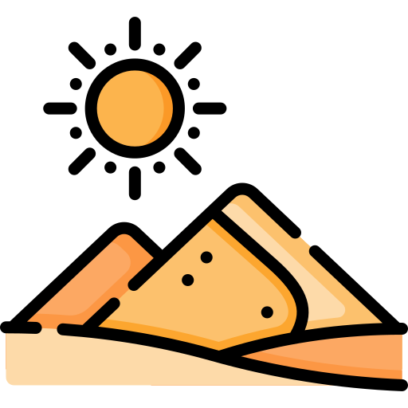
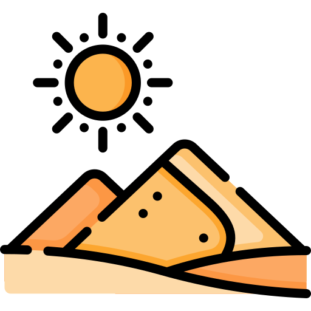

Project Name:
Normalcy test
(Are you a "normal" NYUAD student?)
Project Description:
The project came out of a group discussion between us groupmates while thinking of an interactive experience. Initiated by the idea of using a collage like aesthetic, we thought initially of an interactive comic experience much like BuzzFeed quizzes or Rorschach tests which predict personality types based on silly questions. This led to the ideation of a particular anxiety all of us generally face as teens i.e., if we fit in or not/ if we are normal or not? Further exploring this concept, we decided to make an NYUAD centric interactive experience for freshmen to try and figure out their anxiety by not predicting if they are normal or not but by rather providing a red herring and ending it with an assurance that everyone is indeed unique in this multicultural and interdisciplinary university.
Process:
The initial process was very much a group effort which was brought about by the ideation of the concept we wanted to explore. We decided to come up with different prompts and choices an NYUAD kid might have to make on their routine day to day life and finalised them on a moodboard which Injoo has posted on her documentation. Afterwards, the responsibility was split amongst sections of our interactive comic. I and Isha worked on Situation 3, 4 and the final page SVGs following which I assisted Jun and Injoo during the debugging/styling process of the code.
Some features I worked on:
- Taking photos and making collage SVGs for situations 3 and 4.
- Debugging and CSS styling.
- Making transparent stickman gif.
Reflection/Evaluation:
I feel the collaborative part of the experience was very much new and figuring out/bouncing ideas was a lot of fun. In terms of the project, I feel we came up with a pretty decent/well furnished prototype of a project that could be made very interactive, engaging and informative if allowed to bake in the oven for a longer time. Figuring out the format of SVGs made so much sense to me as a non-coder how this illustrative objects work on websites and the different event listeners that provide plenty of functionality to play around with such as in situation 4 involving the wardrobe outfit selector. Overall, I felt it was a rewarding experience and some tweaks such as borders/doors between different slide, snapping scrolls and further hover styling will make the website definitely more interactive.
 All Projects
All Projects
 Thriftin'
Thriftin'
 Normalcy Test
Red Desert
Tales From Abu Dhabi
Normalcy Test
Red Desert
Tales From Abu Dhabi